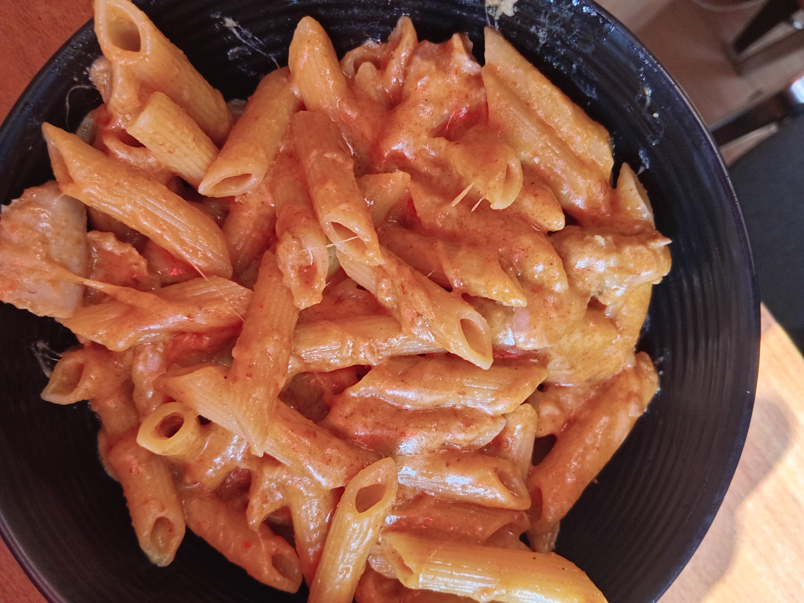

Odins recipes
How to make hot Alfredo,the naija way.
Ingredients
- Offcourse yaji(A Nigerian sort off paprika spice),the base of this recipe
- Heavy cream,i live in Russia so i substitute heavy cream for a Russian milk product called slivki
- An onion
- Chicken(optional and very stressful)
- MSG seasoning,pepper and any other choice spices.B-ut not curry.
- Mozerela cheese
Steps
- Boil your pasta of choice(my favourite is penn)
- Slice your mozerella into cubes.
- Pour your heavy cream or slivki into a hot pan.
- Add your spices,most importantly your yaji
- Incorporate your sliced mozerella to the mix
- Add your pasta to the mix
